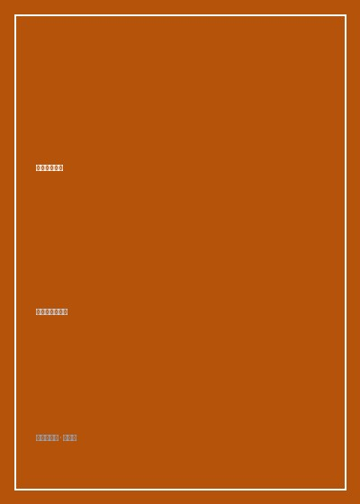

世界因你不同

总体观点
《世界因你不同：李开复自传》是中国当代最具影响力的科技精英成长与职业规划范本之一。作为全球首屈一指的语音识别与人工智能早期开拓者，李开复以坦诚平实的笔调，全景回顾了自己从台湾眷村的顽皮孩童，到赴美求学转型计算机科学，再到历任苹果副总裁、微软全球副总裁兼中国研究院创办人、Google大中华区总裁的波澜壮阔历程。
全书贯穿着“追随我心，做最好的自己”与“让世界因你而有一点点不同”的核心价值观。李开复不仅详尽解密了硅谷高科技巨头的内部创新机制与惊心动魄的商业权谋博弈，更向青年一代倾囊相授其面对重大人生岔路时的决策心智——永远不要屈从于平庸与金钱诱惑，勇于走出舒适区，将个人天赋与时代最宏大的技术浪潮相结合，释放生命的最大正向影响力。
核心观点
-
1. 从心选择：倾听内心的声音而非外界的期望
人生的每一次重大跃迁，都是勇于打破他人预设路径、转向自己真正富有激情的领域的自省过程。
李开复在哥伦比亚大学毅然放弃人人羡慕的法学专业，转投当时尚处冷门的计算机科学系，正是遵从了自己坐在终端机前敲代码时的纯粹快乐。 -
2. 做最好的自己：打破完美主义，专注独特优势
成功不是要在所有维度上胜过所有人，而是在自己最具天赋的核心领域深耕到不可替代的高度。
在卡内基梅隆大学攻读博士期间，打破传统专家系统框架，独创隐马尔可夫模型（HMM）语音识别算法，研发出世界首个非特定人连续语音识别系统SPHINX。 -
3. 微软中国研究院拓荒：给中国青年搭建世界级舞台
跨国企业本土化的最高境界是赋能本土人才，把最前沿的研究机制与学术自由带入高速发展的中国土壤。
1998年临危受命回京创立微软中国研究院（后升格为微软亚洲研究院），以开放包容的学术环境培养出张亚勤、沈向洋等一大批世界级AI领军人才。 -
4. 微软跳槽谷歌惊天诉讼案背后的原则坚守
面对老东家强大的司法围剿与高管背信非议，以极度坦荡的法庭自证与职业操守击碎指控，守卫跨界自由。
详述2005年轰动华尔街与硅谷的诉讼始末，李开复在法庭上直面比尔·盖茨与鲍尔默的重压，用详尽工作日记自证清白，顺利履新Google。 -
5. 追寻最大影响力：从企业高管到青年创业导师的蝶变
衡量生命价值的终极尺度，不在于掌控了多少商业帝国资产，而在于你启发了多少有抱负的年轻灵魂。
2009年毅然辞去谷歌全球副总裁高薪职务，创立创新工场，为中国移动互联网早期的年轻创业团队提供孵化基金与全方位辅导。
全书结构
-
第一章 顽童童年与留美求学
台湾眷村调皮淘气的童年趣事，母亲充满智慧的开明家教，以及初抵美国橡树岭中学的文化碰撞与适应。
回顾母亲如何保护自己改试卷分数的自尊心并引导诚实，奠定一生的正直品格底色。 -
第二章 在哥大与CMU追寻激情
哥伦比亚大学弃法从工，卡内基梅隆大学师从图灵奖得主拉吉·瑞迪，攻坚SPHINX语音识别系统的科研突破。
记录连续数月在机房熬夜测试黑白棋程序与语音识别模型，发表《纽约时报》头版轰动学术界的难忘时刻。 -
第三章 苹果岁月与SGI历练
走出学术象牙塔进入工业界，在苹果公司研发QuickTime多媒体技术，在商业起伏中完成从科学家向技术高管的蜕变。
分享与约翰·斯卡利等苹果高层共事的经验，反思苹果九十年代初由于战线过长导致的战略失误。 -
第四章 微软中国研究院的拓荒奇迹
受比尔·盖茨之托回京创建微软中国研究院，四处网罗天下英才，写下给中国青年的第一封信。
重温在各大高校巡回演讲引发万人空巷的火爆场景，见证一代中国学子对计算机科学的狂热向往。 -
第五章 转战Google与世纪诉讼风暴
加盟推崇“不作恶”理念的谷歌，直面微软天价竞业限制官司，打赢华盛顿州法庭世纪诉讼。
还原法庭宣判胜诉后，与佩奇、布林相拥庆祝并正式启动谷歌大中华区研发中心落地的激昂瞬间。 -
第六章 从心选择：创新工场的远航起锚
告别谷歌平稳高位，顺应移动互联网浪潮创办创新工场，投身中国青年创新创业赋能的星辰大海。
在告别信《再见，谷歌》中动情写道“我希望用自己生命最后二十年帮助中国年轻人实现改变世界的梦想”，开启人生新篇章。